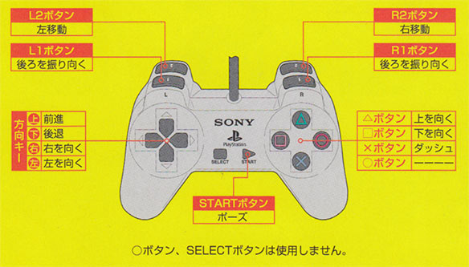
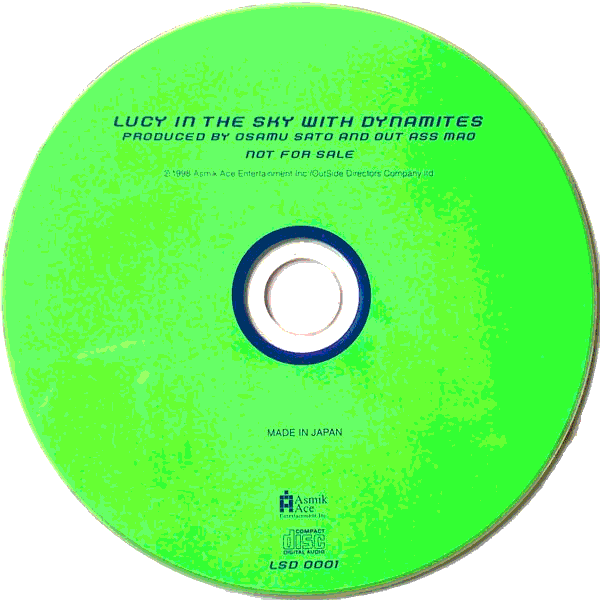
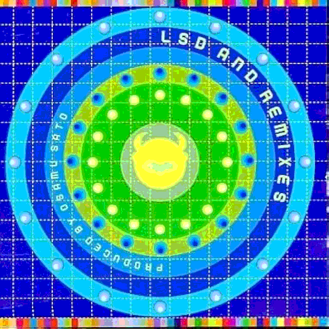
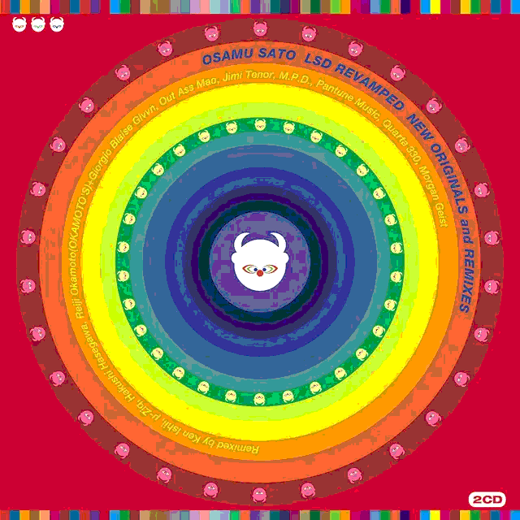
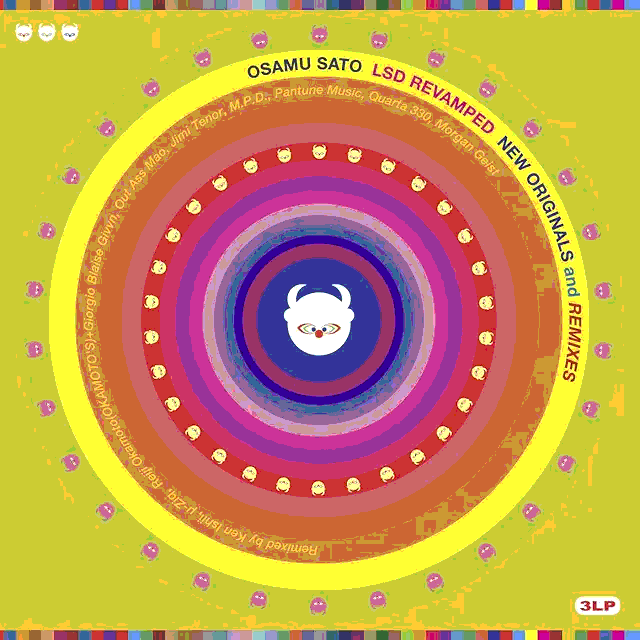
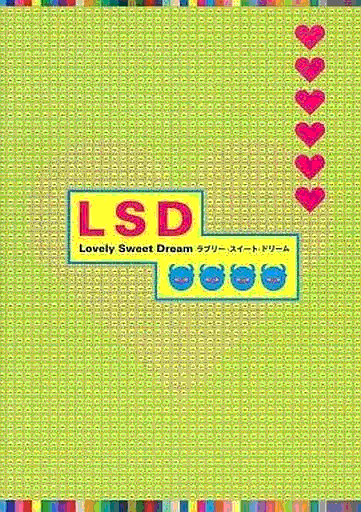

Play Station版 LSD
|
PSゲームアーカイブス版 LSD |
| 発売日：1998/10/22 |
発売日：2010/08/11 |
| 発売元：アスミックエンターテイメント |
ジャンル：その他のジャンル |
| ジャンル：ドリーム・エミュレータ |
容量：410MB |
| プレイヤー：1人 |
CERO：D （17才以上対象, 暴力) |
| 定価：4,800円 (税抜) |
定価：600円 (税込) |
| メモリーカード：１ブロック |
スクリーンショット機能対応 |
| 初回特典：「BONUS CD "Lucy in the Sky with Dyanamites"」60分の曲が入ってます |
PS3・PSP・PSPgo・PS Vita・PlayStation Vita TV |
| 夢のゲーム (ゆめのげーむ) |
変なゲーム (へんなげーむ) |
|
「LSD」は、夢をモチーフにしたドリーム・エミュレータです。フィールドをさすらい、様々なキャラクターに出会う。そして気持ちいいとか、気持ち悪いとか、色々なことを感じるためのゲームです。 |
「LSD」はゲームらしくないゲームです。美少女を口説きたい方、悪の魔王をやっつけたい方、ロボットを乗りこなしてみたい方などは、お買い求めにならないほうが無難です。 |
| BGM (びーじーえむ) |
ジャケット (じゃけっと) |
| 「LSD」のオープニング・ムービーのBGMを、KENISHII, JIMI TENOR, μ-ziq, MORGAN GEIST, PANTUNES MUSIC,
M.P.D., OUT ASS MAOがリミックス。これらの名前にピンときたら、ぜひお買い求めください。 |
「LSD」には7種類のジャケットが封入されています。groovisions, HEX, DJ FOOD, ANDREWSUTTON, MATT ROACH, SEAN
BOOTHデザインのジャケットをご覧になりたい方は、ぜひお買い求めください。 |
| 悪夢 (あくむ) |
|
「LSD」を長時間に渡ってプレイすると、ヘンな気分になることがあります。健康のために、就寝前の30分程度のプレイに抑えておくことを推奨しますが、悪夢にうなされる可能性があります。 |
システム
1日ごとに夢の世界を散歩するゲームです。365日経つとまた1日に戻ります。
夢の世界は荒廃した都市、広大な野原、古い町並みといった様々な雰囲気をもつフィールドによって構成されています。すべてのフィールドをくまなく探索したとき、新たな発見があるかもしれません。
各フィールド間は徒歩だけでなく、壁や柵などの障害物にぶつかると、他のフィールドに行ける「LINK」という移動手段があります。中には、「LINK」でないと移動できないフィールドも存在するとか……。
いろんなフィールドをさまよい、数々のものを見ていくうちに、メニュー画面に"FLASHBACK"という項目が現れます。この"FLASHBACK"はこれまでに見た印象的なシーンをもう一度見ることができます。ただしフィールドに出現する謎の紳士に出会うと、この項目は消えてしまいます。
規格番号: SLPS 01556
操作方法

方向キー
- 上: 前進
- 下: 後退
- 右: 右を向く
- 左: 左を向く
L, Rキー
- L1: 後ろを振り向く
- R1: 後ろを振り向く
- L2: 左移動
- R2: 右移動
記号ボタン
- △: 上を向く
- ⬜︎: 下を向く
- x: ダッシュ
- ○: 使用しません
その他ボタン
- START: ポーズ (一時停止)
- SELECT: 使用しません
特殊操作（ソフトリセット）
- ポーズ中に 「SELECTボタン + △ボタン」 を同時に押すと、ソフトウェア・リセットがかかり、メニュー画面に戻ります。
(※このときDayとグラフのデータもリセットされるため注意が必要です。)
BONUS CD: "Lucy In The Sky With Dynamites"

- produced by OSAMU SATO & OUT ASS MAO
- additional musicians
- Keyboards & Program: TETSUYA YAMAMOTO
- Synthesizer, Bass & Program: HIROSHI MIZUIDE
- Guitar: SHINOBU NARITA
- Trumpet: SHIGERU TERAUCHI
- Cello: YUMI KOMATSU
- Soprano voice: AKI YANAGISAWA
- Electric wave: OUT ASS MAO
- music programed, digital conducted by OSAMU SATO
- mixed by TORU YAMAZAKI & OSAMU SATO
- recorded & mixed at room8
- mastered by MITSUKAZU TANAKA
- mastered at Sony Shinanomachi
初回特典CD「Lucy In The Sky
With Dynamites」は、archive.orgで聴くことができます。
LSD関連商品
LSD&REMIXES

LSDの2枚組みサントラ。ケンイシイやμ-ziqやJimi Tenorなどが参加。廃盤になっているため、中古でしか入手できません。
Amazonなどで買えることがあります
Disc 1: Original Mixes:
- Funky Solution (5:50)
- Long Tall Eyelash (5:41)
- TV River (5:40)
- Professional Problem (4:57)
- Oriental Grill (4:20)
- Come On And (6:50)
- Fax Factory (4:40)
- Fried Banana (5:18)
- Say Cheeze (6:02)
Disc 2: Remixes:
- Long Tall Eyelash (Ken Ishii Mix) (5:50)
- Funky Solution (Jimi Tenor Mix) (6:32)
- Long Tall Eyelash (µ-Ziq Mix) (8:11)
- TV River (Morgan Geist Mix) (5:40)
- Professional Problem (Pantune Music Mix) (4:57)
- Oriental Grill (M.P.D Mix) (9:01)
- Come On And (Out Ass Mao Mix) (8:15)
- 発売日：1998/10/21
- 収録時間: 1 時間 41 分
- 販売: 日本クラウン
- EAN: 4935228988174
- ASIN: B00000JA5F
- 規格番号: MKCA1003-4
- 定価: 2,940円
archive.orgで聴くことができます。
LSD REVAMPED (20th Anniversary Deluxe Edition)

LSD20周年記念の2枚組みサントラ。ケンイシイやμ-ziqやJimi Tenorなどが参加。
Disc 1
- Long Tall Eyelash 2018
- Come On And 2018
- Fax Factory 2018
- Fried Banana 2018
- Funky Solution 2018
- Oriental Grill 2018
- Professional Problem 2018
- Say Cheeze 2018
- TV River 2018
- Mayday (Bonus Track)
Disc 2
- Long Tall Eyelash (Ken Ishii MIX)
- Long Tall Eyelash (μ-Ziq Mix)
- Come On And (Out Ass Mao Mix)
- Come On And (Hakushi Hasegawa Mix) (New Remixes 2018)
- Fax Factory (Reiji Okamoto(OKAMOTO’S)+Giorgio Blaise Givvn MIX) (New Remixes 2018)
- Fried Banana (Out Ass Mao Mix) (New Remixes 2018)
- Funky Solution (Jimi Tenor Mix)
- Oriental Grill (M.P.D. Mix)
- Professional Problem (Pantune Music Mix)
- Say Cheeze (Quarta 330 Mix) (New Remixes 2018)
- TV River (Morgan Geist Mix)
- 発売日：2018/4/11
- 収録時間: 2 時間 5 分
- 販売: MUSICMINE
- EAN: 4582116558294
- ASIN: B079PWZJB8
- 規格番号: MMCD20024/25
- 定価: 3,000円 (税別)
LSD REVAMPED (LP)

上記LSD20周年記念サントラのレコード盤。3枚組LP。
Disc 1
- Funky Solution 2018 (5:51)
- Long Tall Eyelash / Ken Ishii Mix (5:49)
- Oriental Grill 2018 (4:20)
- Fried Banana 2018 (4:37)
- Come On And 2018 (5:14)
- Fax Factory 2018 (4:40)
- Say Cheeze / Quarta330 Mix (4:07)
- Fax Factory / Reiji Okamoto and Giorgia Given Mix (7:00)
Disc 2
- Funky Solution / Jimi Tenor Mix (6:35)
- Long Tall Eyelash 2018 (5:42)
- Professional Problem / Pantune (7:25)
- Professional Problem 2018 (5:10)
- TV River / Morgan Geist Mix (6:24)
- Long Tall Eyelash / u-ziq Mix (8:14)
Disc 3
- Say Cheeze 2018 (5:57)
- Fried Banana / Outassmao Mix (4:36)
- Oriental Grill / M.P.D. Mix (9:08)
- TV River 2018 (5:41)
- Come On And / Outassmao Mix (8:20)
- Typhoon Tribe (5:39)
- 発売日：2019/4/17
- 販売: MUSICMINE
- EAN: 4582116558584
- ASIN: B07Q8Q6QRD
- 規格番号: MMCD20030LP
LOVELY SWEET DREAM

LSDの夢日記をモチーフに80組のアーティストが制作した豪華作品集。こちらも現在は廃刊になっていて、Amazonなどで中古でしか買えません。
参加クリエーター：タケヤマノリヤ、辻和子、Hexstatic、本秀康、白根ゆたんぽ、マー関口、Zac
Sandler、groovisions、エレクトリック、マニアッカーズデザイン、田仲容子、坂本龍一、飯塚昇、佐藤理、水野健一郎、ナガオカケンメイ、サダヒロカズノリ、竹内オサム、上野アモーレ宏介、マディ上原、トレスアミーゴス、Delaware、本田佳世、藤本康生、モンキー王国、テリー・ジョンスン、都築潤、大喜多麒人、東泉一郎、菊池きみえ、宗誠二郎、山本タカト、高野寛、スージー甘金、ヒロ杉山、Andrew
Boerger、中村幸子、後藤宏、萩谷海、松下計、TGB DESIGN、いしいしんじ、本宮かをる、a.z.b.、マッハ55号、千原航、榊和也、KEN
ISHII、南新太郎、ソリマチアキラ、所幸則、太公良、常盤響、打越俊明(錦瓊)、深津真也、中ザワヒデキ、谷田一郎、GTO、ロボットメガストア、加藤賢宗、ソエジマケイタ、Andrew
Sutton、鳥屋尾悟郎、児玉鉄兵、伊藤桂司、能登伸治、山田博之、Y Hayami、成田忍、Hirobumi Yano、GESCOM、飯田和敏、ドルバッキー・ヨウコ、Nendo Graphixxx、Pete
Fowler、AGES 5&UP、Joerg Schaum、石津タカシ、Kazuko Otsuka、とみぞうちゃん
- 発売日：1998/10/22
- ページ数: 191 ページ
- 著者: 西川公子
- 編集: アウトサイドディレクターズカンパニー
- 販売: メディアファクトリー(KADOKAWA)
- 定価: 1,800円 (税別)
- ISBN-10: 4889916555
- ISBN-13: 978-4889916553
archive.orgで読むことができます。
<<LSD MENU